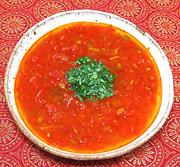

|
Tomato RasamIndia, South - Thakkali Rasam | ||||
| Makes: Effort: Sched: DoAhead: |
7 cups *** 1-3/4 hrs Yes |
In India, Rasams are a second course, drizzled over rice, eaten with the fingers, but see Serving. Most of the Prep time is for chopping tomatoes - a processor will give you a different texture. | |||
|
2-1/4 3 1 1 1 ------- 1 1 1 1/8 2 5 ------- 1/2 1 ------- 2 1 1-1/2 ------- 3 |
# T c in --- t t t t --- t t --- t c c --- T |
Ripe Tomatoes (1) Toor Dal (2) Water Green Chili (3) Ginger root -- Tempering Mustard seeds (4) Cumin seeds Pepper, black Asafoetida (5) Red Chili, dry (6) Curry Leaves (7) -- Powders Turmeric Salt -------------- Ghee (8) Water Water (more) -- Garnish Cilantro Leaves |
PREP - (1-1/2 hr - 30 min work)
|
imp_gntommas1 160910 d20 - www.clovegarden.com
©Andrew Grygus - agryg@aaxnet.com - Linking to and
non-commercial use of this page is permitted.